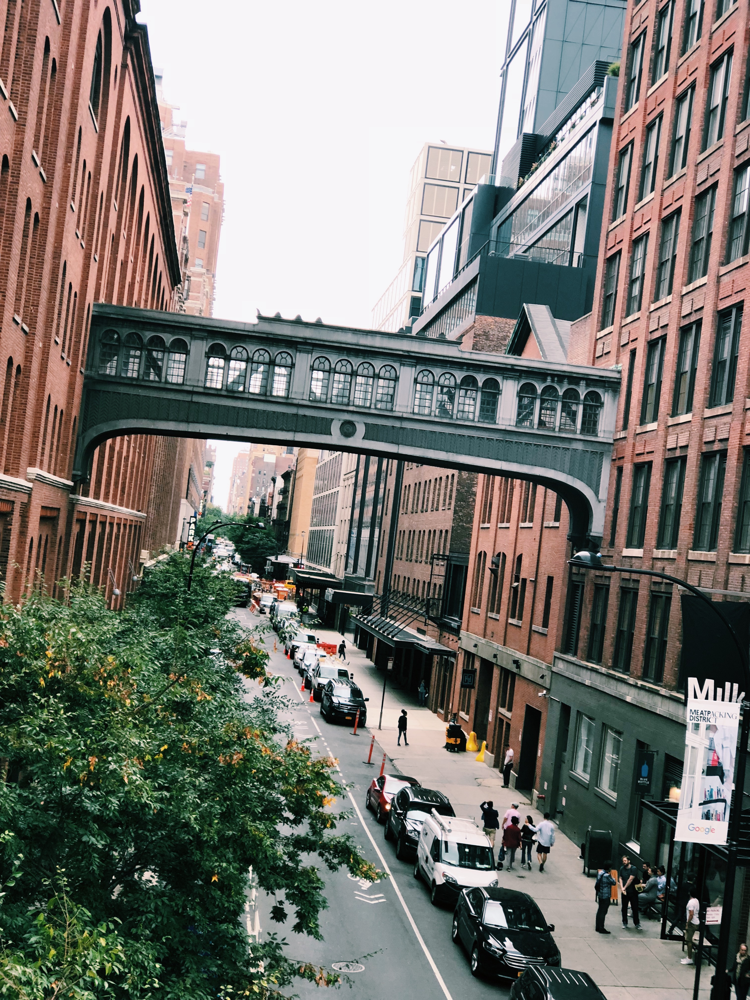
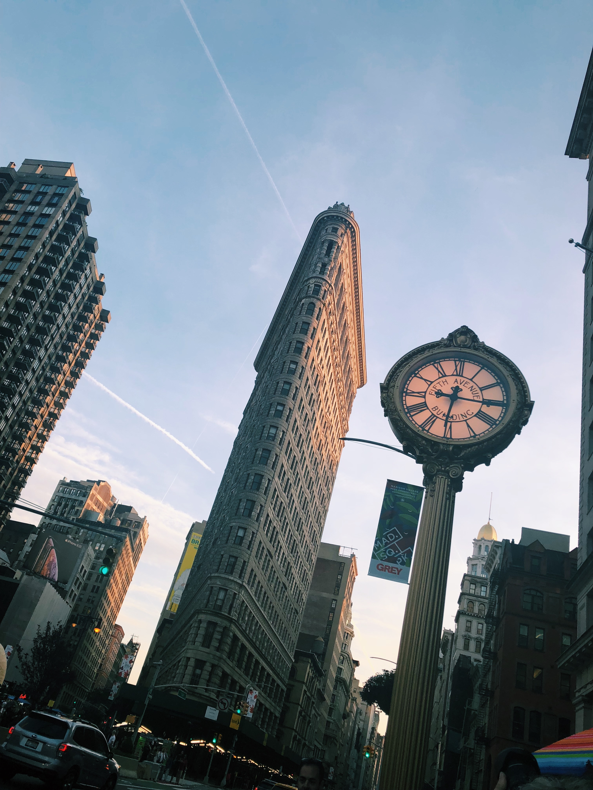
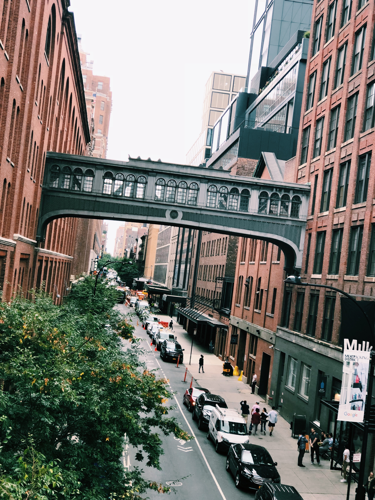
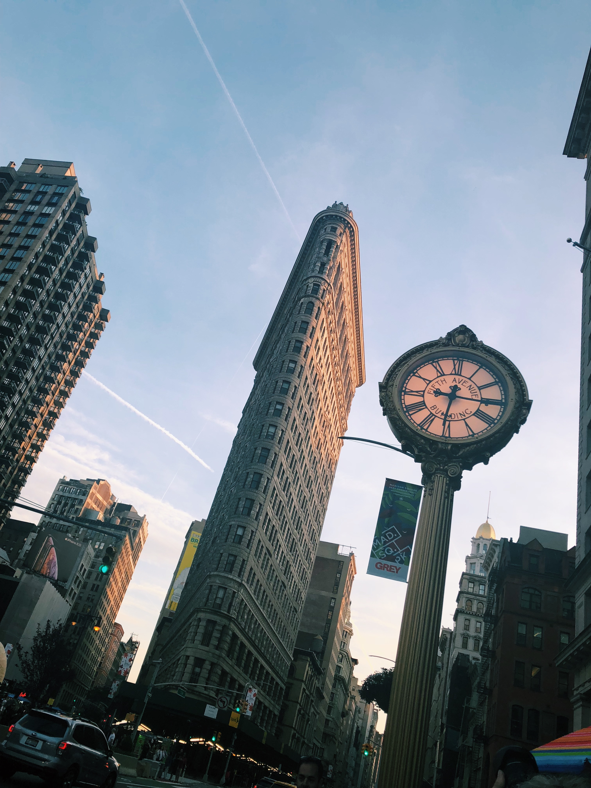

About Me


Born in Tokyo, Japan. Raised in Los Angeles, California. Currently in NYC, New York.
I am currently studying "Journalism and Design" at The New School in Manhattan, on a exchange program from Jouchi (Sophia) University in Tokyo, Japan.
Aside from traveling, I love dancing. I started doing gymnastics at the age of 8 and switched to dancing by 12. I was dancing competitively in LA, and continued dancing by joing a dance club at my middle school and high school. In my current university back in Japan, I am also in their dance team "G-Splash" which consists of about 200 students.
 


